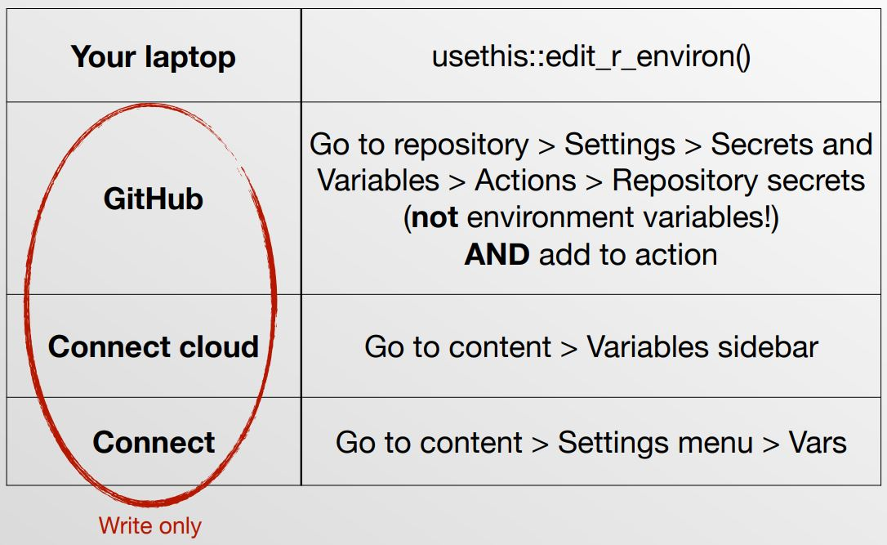

req_url_query(
...,
apiKey = Sys.getenv("NEWS_API_KEY")
)R in Production Workshop Summary
Important
This document is a summarised takeaway from the R in production workshop focused on providing itemises with useful tools and tips that can be referenced and won’t be providing much context.
Note
There were other very interesting souding workshops at the same time. Fx. slides from Jenny Bryan’s package development workshop can be found here.
Practical tips for working on production projects
Time
Proposed batching and time boxing. Meaning gather issues for a project, and then work intensely with that for a certain amount of time (do not plan what needs to be done, but how long you have to work on that project). This ensures not having to context switch between projects, and having to prioritise the most important parts.
Package development in production
Package dependencies
- Fine to not think about dependencies during prototyping, but when creating code for production, see if some dependencies can be left out, to make code less vulnerable.
- Use this code snippet (requires development version of
pakas of 12-08-2024) to see what interdependencies the removal of a package will provide.
- Use this code snippet (requires development version of
- Having package
conflictedloaded means you get an error when trying to use a function that is available in several packages. - Function
renv::renv_lockfile_from_manifest("manifest.json", "renv.lockfile")let’s you create a lock file from a manifest file, which can be useful fx. if you can no longer run the code in a repo from an app that was deployed a year ago.- Hadley’s recommendation is to not use renv unless absolutely necessary. Using manifest file gives control in deployment but not in development - nice middle ground.
Input/data validation
- See checkmate for input validation
- See pointblank for data validation
col_is_xandcol_vals_xfunctions useful
Set up usethis
- Use
usethis::use_usethis()for consistent setup across sessions. - Disable session saving/reloading with
usethis::use_blank_slate().
Setting up a repository with GitHub pages using usethis
use_git()use_github()use_description()use_github_action(...)use_github_pages()
Debugging and logging
- Look into using
loggerpackage. Has fx.log_infoandlog_warn. - Example shows that logging fx. “trying…” and writing different URLs can be helpful.
- Use emojis since they catch your eye.
- Add
options(rlang_backtrace_on_error = "full")to your Rmd/qmd documents, so error messages are displayed withrlangwhen deployed. - Useful to use
print(rlang::back_trace())sometimes. - Add
cat("Message", file = stderr()). Thefilespecification makes sure that quarto(/rmarkdown) does not write it in the rendered document- Will appear in the log on the deployed app.
- Name chunks in rmd/qmd to help with debugging (instead of it saying there is an error in unnamed chunk x, you get a name of the chunk)
What is “in production”?
- Code is run on another machine
- Suggest using
runs-on: ubuntu-latestlinux based server
- Suggest using
- Code is run repeatedly
- Scheduled, after another job, or on demand
- Code (and data) is a shared responsibility
Two types of production jobs
Batch jobs:
- Usually an .R, .Rmd, .qmd file to
- generate report, prep data, fit model, etc.
- run on a schedule or succeeding another job
Interactive jobs:
- Fx. a shiny app or plumber API that helps
- explore data, score model, etc.
- run on demand
GitHub Actions
- YAML Structure: Place YAML files with GitHub actions in “.github/workflows”.
- GitHub actions run in container
- Use
git-auto-commit, publish a site or another action to “retrive” the actions performed by the action - Need to tell it to install R, install dependencies, etc.
- In contrast to Posit Connect Cloud, which automatically detects R version and dependencies
- Use
Structure in steps:
- Configuration of GitHub action
- Setup of environment
- Execution
- Publishing/deployment
Configuration of GitHub action
- Name: Name of the action showing in Actions pane inside repository
- Tip: Align with the filename
- On: Specify when to run
- Fx. using push, pull_request, workflow_dispatch, etc.
Scheduled running with cron jobs
Tip
Use crontab.guru for cron syntax.
- Run at 9 AM every Friday:
on:
schedule:
- cron: '0 9 * * 5'- Run hourly on weekdays:
on:
schedule:
- cron: '0 9-17 * * 1-5'Setup
- Use
rigfor R setup andpakfor dependencies:
- uses: actions/checkout@v4
- uses: r-lib/actions/setup-r@v2
with:
use-public-rspm: true
- uses: r-lib/actions/setup-r-dependencies@v2- Optionally, use
renv:
- uses: r-lib/actions/setup-renv@v2Execution
- Example steps:
- name: Fetch latest data
run: Rscript scrape.R- name: Render Quarto directory
run: quarto renderPublishing
- Auto-commit changes:
- uses: stefanzweifel/git-auto-commit-action@v5- Publish quarto website
- name: Render and Publish
uses: quarto-dev/quarto-actions/publish@v2
with:
target: gh-pages
env:
GITHUB_TOKEN: ${{ secrets.GITHUB_TOKEN }}Example repositories and actions
Repositories:
- Available Work: Uses cron, personal access tokens, and pak for setup.
- Houston Pollen: Same as above but includes parquet file management.
- CRAN Deadlines: Renders Quarto documents and publishes to GitHub Pages.
Actions:
Posit Connect Cloud
- Example of deployed app: eggnogr
- Requires
manifest.jsonfile viarsconnect::writeManifest(). - Simplifies Docker image selection compared to GitHub Actions.
General considerations regarding CI/CD
Package installation and dependency setup
Approaches to snapshotting to make sure you have same package on laptop and server
- DESCRIPTION +
pak::pak(".")- live life on the edge rsconnect::writeManifest()- capture dependencies when you deploy (only affects the server at deployment)renv::snapshot()- lock dependencies for eternity (also on the laptop)
Information in manifest.json file
What is the non-package information?
- version (of the manifest spec)
- locale (language)
- platform (R version)
- metadata
- appmode (fx. shiny, rmd-static, etc.)
- etc.
- files
What is the package information?
- Source: Fx. CRAN
- Repository
- description (metadata about lots of things)
Difference between desktop and server package installs
- Source package: Source code that needs to be built (in steps to bundled and then binary)
- Binary package: Ready to download, but computer specific. Is created from a source package. Not available for Linux on CRAN.
System dependencies:
- For Mac and Windows, packages are self-contained, meaning that system dependencies are within the package.
- For Linux, it uses C, etc. installed somewhere else on the computer.
- Use the Posit package manager to get binaries also for Linux.
- So do not need to compile from source each time. In containers, we install package, run some code and throw it away. So compiling source package (which might take a long time) needs to be done again and again.
- Use the Posit package manager to get binaries also for Linux.
Authentication
(Encrypted) Environment variables

Don’t use Sys.setenv() - this will be saved in the .Rhistory file, which is easy to accidentally share. Add to your .Renviron file as shown in above picture
Using environmental variables with GitHub actions and Posit cloud connect
In code, fx. use
- On laptop: Set fx.
NEWS_API_KEYwith value in .Renviron - Make secret variable in GitHub or posit cloud connect with name
NEWS_API_KEYwith value equal to the key (which is also set in .Renviron)- Make sure to include it in the environment of the docker container running the GitHub action by typing
env:
NEWS_API_KEY: ${{ secrets.NEWS_API_KEY }}- The above point is often also used to prove a GitHub PAT to authorise a deployment fx.
Federated authentication
Can be used in Posit Connect administered by IT department in company.
Containers
- Use of containers makes sure platform does not change
- Useful containers to know:
- GitHub action containers - Choosing the runner for a job
ubuntu-latest
- rocker
- Run R with docker containers
- rhub
- Use to create GitHub action for checking your package
- evercran
- Run historical R versions on today’s computers
- GitHub action containers - Choosing the runner for a job